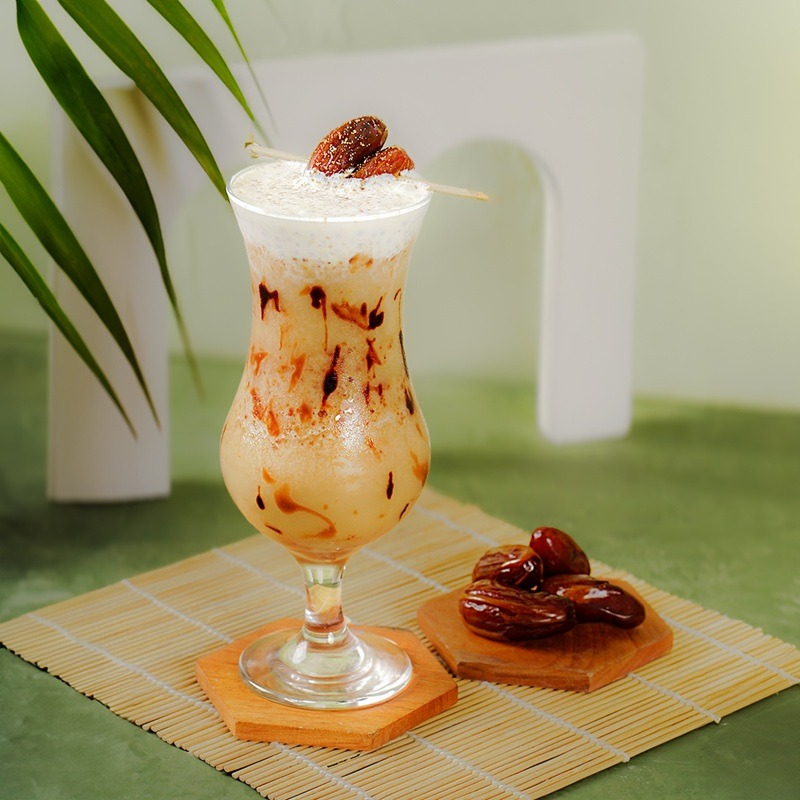

| Toffin AI Recipe |
| Peach Lychee Sparkling Mocktail |
| Halo Toffin Customer, |
| Jadikan barista Anda bintang di balik bar. Toffin AI menganalisis riwayat belanja Anda dan menemukan menu signature yang belum pernah ada di daftar menu Anda. |
 |
|
| • | FO Peach Syrup 750 ml | | • | FO Lychee Syrup 750 ml | | • | FO White Peach Syrup (sedikit, penguat aroma) | | • | Soda water | | • | Es batu |
|
|
| Isi gelas dengan es batu hingga 3/4 penuh. | | Tambahkan FO Peach Syrup dan FO Lychee Syrup. | | Tambahkan sedikit FO White Peach Syrup untuk memperkuat aroma buah. | | Tuang soda water perlahan hingga penuh. | | Aduk perlahan, lalu sajikan. |
|
Seberapa menarik resep ini? Ketuk bintang untuk memberi nilai |
|
|
| Resep ini dibuat otomatis oleh Toffin AI dari bahan yang Anda beli di Toffin. Tambah varian bahan untuk membuka lebih banyak resep kreatif yang cocok dengan bisnis Anda. |
Salam hangat,
Tim Toffin Indonesia |